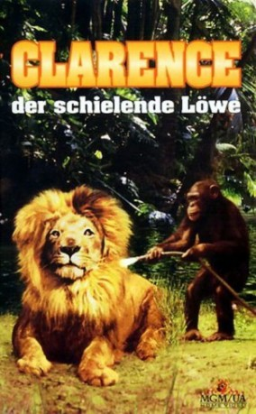

#11692 Clarence, der schielende Löwe
Alternativ: Clarence, the Cross-Eyed Lion (Englischer Titel)
 
 IMDB-Wertung: 5.9 / 10
IMDB-Wertung: 5.9 / 10  Metascore: 0
Metascore: 0 
Dr. Tracy leitet eine Tierstation in Afrika, wo er mit seiner Tochter Paula lebt. Liebling dort ist Clarence, ein Löwe, der ob seines Sehfehlers von der Antilopenjagd nur träumen kann. Doch plötzlich ist die Idylle auf der Station bedroht: Schurken wollen Tracys Tiere entführen…
Jahr: 1965
Dauer: 87 Minuten
FSK: 6
Land: USA Studio: MGMTonspuren: DD5.1 - ,
Untertitel:
Auflösung: 720p (1280x864) Größe: 5212 MB
Genre: Komödie, Abenteuer, Familie
Regisseur: Andrew Marton
Drehbuch: Art Arthur, Alan Caillou, Marshall Thompson
Soundtrack: Robert Armbruster
Darsteller:
- Marshall Thompson als Dr. Marsh Tracy
- Betsy Drake als Julie Harper
 Richard Haydn als Rupert Rowbotham
Richard Haydn als Rupert Rowbotham- Cheryl Miller als Paula Tracy
 Alan Caillou als Carter
Alan Caillou als Carter- Rockne Tarkington als Juma
 Maurice Marsac als Gregory
Maurice Marsac als Gregory Robert DoQui als Sergeant
Robert DoQui als Sergeant- Mark Allen als Larson
- Napoleon Whiting als Villager
- Albert Amos als Husseini
- Dinny Powell als Dixey
- Laurence Conroy als Tourist
- Allison Daniell als Tourist's Wife
- Janee Michelle als Girl in Pit
- Naaman Brown als Villager
- Chester Jones als Old Man
- Clarence als Clarence - the lion
- Doris als The chimpanzee
- Leo als Clarence - when aggressive
- Mary Lou als The python
- Modoc als Elephant (uncredited)
Datei: X:\1965\Clarence, der schielende Löwe (1965, FSK6, 1280x864).mkv seit 20.08.2019
Festplatte: Gemischt-01+Anime
 Es gibt insgesamt 25 Filme in der Gruppe '1965'
Es gibt insgesamt 25 Filme in der Gruppe '1965'